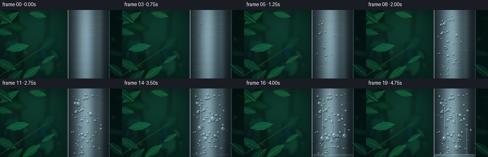
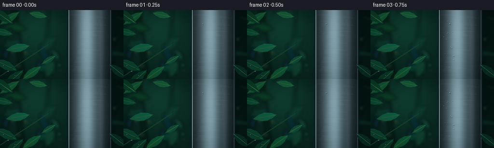

CODING AGENTS AS PIXEL WORLD MODELS
traex/GPT-5.6-Sol · phygen_113
点击播放 · 原生 RGB 像素
逐轮保存的候选
回放视频、检查图与代码变化。
每份候选均可单独播放。实际图片检查记录在下方工具轨迹中。
候选 01播放与检查图
点击播放 · 原生 RGB 像素


展开代码变化
--- 上一保存版本
+++ 本次保存版本
@@ -0,0 +1,346 @@
+from pathlib import Path
+import math
+import numpy as np
+from PIL import Image, ImageDraw, ImageFilter
+import artifact_io
+
+# Procedural text-to-video render: mist contacting chilled metal in a rainforest.
+W, H, N = 256, 144, 20
+S = 3
+WS, HS = W*S, H*S
+rng = np.random.default_rng(1132026)
+
+
+def smoothstep(a, b, x):
+ if b == a:
+ return float(x >= b)
+ q = np.clip((x-a)/(b-a), 0.0, 1.0)
+ return q*q*(3.0-2.0*q)
+
+
+def rgba_layer():
+ return Image.new("RGBA", (WS, HS), (0, 0, 0, 0))
+
+
+def scbox(box):
+ return tuple(int(round(v*S)) for v in box)
+
+
+def polygon(draw, pts, **kw):
+ draw.polygon([(int(x*S), int(y*S)) for x, y in pts], **kw)
+
+
+def draw_leaf(layer, cx, cy, length, width, angle, color, alpha=255, vein=True):
+ """Pointed rainforest leaf using a smooth polygon silhouette."""
+ d = ImageDraw.Draw(layer, "RGBA")
+ ca, sa = math.cos(angle), math.sin(angle)
+ ux, uy = ca, sa
+ vx, vy = -sa, ca
+ pts = []
+ # Curved upper edge, pointed tip, curved lower edge.
+ for q in np.linspace(-1, 1, 15):
+ longitudinal = q * length/2
+ bulge = math.sin((q+1)*math.pi/2) * width/2
+ # asymmetric organic edge
+ jitter = math.sin((q+1)*13.1 + cx) * width*.025
+ x = cx + ux*longitudinal + vx*(bulge+jitter)
+ y = cy + uy*longitudinal + vy*(bulge+jitter)
+ pts.append((x*S, y*S))
+ for q in np.linspace(1, -1, 15):
+ longitudinal = q * length/2
+ bulge = -math.sin((q+1)*math.pi/2) * width/2
+ jitter = math.cos((q+1)*11.7 + cy) * width*.025
+ x = cx + ux*longitudinal + vx*(bulge+jitter)
+ y = cy + uy*longitudinal + vy*(bulge+jitter)
+ pts.append((x*S, y*S))
+ d.polygon(pts, fill=(*color, alpha))
+ # Central vein and faint edge gloss.
+ if vein:
+ p0 = ((cx-ux*length*.43)*S, (cy-uy*length*.43)*S)
+ p1 = ((cx+ux*length*.43)*S, (cy+uy*length*.43)*S)
+ d.line([p0, p1], fill=(115, 177, 102, min(alpha, 115)), width=max(1, S))
+ p2 = ((cx+vx*width*.25-ux*length*.05)*S, (cy+vy*width*.25-uy*length*.05)*S)
+ d.line([p0, p2], fill=(137, 192, 130, min(alpha, 52)), width=max(1, S))
+
+
+def make_background():
+ yy, xx = np.mgrid[0:HS, 0:WS]
+ x = xx/S
+ y = yy/S
+ # Rainforest green-black depth with a soft humid opening in the upper left.
+ glow = np.exp(-(((x-69)/82)**2 + ((y-37)/69)**2))
+ floor = np.exp(-(((x-108)/115)**2 + ((y-137)/52)**2))
+ arr = np.empty((HS, WS, 3), np.float32)
+ arr[..., 0] = 4 + 11*glow + 3*floor
+ arr[..., 1] = 23 + 37*glow + 12*floor
+ arr[..., 2] = 21 + 25*glow + 8*floor
+ # Fine filmic texture, spatially smoothed so it does not look like static.
+ tiny = rng.normal(0, 1, (H//2+1, W//2+1)).astype(np.float32)
+ noise_im = Image.fromarray(np.uint8(np.clip(tiny*30+128, 0, 255))).resize((WS, HS), Image.Resampling.BICUBIC).filter(ImageFilter.GaussianBlur(5*S))
+ noise = (np.asarray(noise_im).astype(np.float32)-128)/28
+ arr[..., 0] += noise*1.6
+ arr[..., 1] += noise*3.0
+ arr[..., 2] += noise*2.0
+ base = Image.fromarray(np.uint8(np.clip(arr, 0, 255)), "RGB").convert("RGBA")
+
+ # Defocused trunks and broad leaves in the canopy.
+ deep = rgba_layer()
+ d = ImageDraw.Draw(deep, "RGBA")
+ d.line([(28*S, -15*S), (48*S, 160*S)], fill=(6, 27, 20, 185), width=12*S)
+ d.line([(102*S, -12*S), (93*S, 155*S)], fill=(7, 35, 28, 125), width=7*S)
+ d.line([(244*S, -15*S), (226*S, 155*S)], fill=(5, 22, 22, 125), width=9*S)
+ for i in range(24):
+ cx = rng.uniform(-10, 265); cy = rng.uniform(-8, 150)
+ if 120 < cx < 235:
+ continue
+ length = rng.uniform(19, 48); width = length*rng.uniform(.25, .48)
+ ang = rng.uniform(-2.8, 2.8)
+ col = (rng.integers(6, 21), rng.integers(42, 78), rng.integers(32, 62))
+ draw_leaf(deep, cx, cy, length, width, ang, col, int(rng.integers(90, 190)), False)
+ deep = deep.filter(ImageFilter.GaussianBlur(3.0*S))
+ base = Image.alpha_composite(base, deep)
+
+ # Dappled rainforest bokeh in the humid air.
+ bokeh = rgba_layer(); bd = ImageDraw.Draw(bokeh, "RGBA")
+ for i in range(21):
+ cx = rng.uniform(8, 246); cy = rng.uniform(2, 137); r = rng.uniform(1.4, 6.5)
+ if 130 < cx < 236:
+ continue
+ tone = rng.choice([0, 1, 2])
+ cols = [(129,190,99,30), (194,211,146,24), (69,151,117,30)]
+ bd.ellipse(scbox((cx-r, cy-r, cx+r, cy+r)), fill=cols[tone])
+ bokeh = bokeh.filter(ImageFilter.GaussianBlur(2.4*S))
+ base = Image.alpha_composite(base, bokeh)
+
+ # Midground recognizable glossy foliage along the left margin.
+ foliage = rgba_layer()
+ specs = [
+ (20,17,48,15,-.58,(17,90,54)), (5,46,44,14,.21,(13,77,51)),
+ (37,79,50,17,-.18,(16,93,62)), (12,115,52,18,.45,(11,70,46)),
+ (66,131,48,16,-.62,(14,84,50)), (79,10,39,13,.22,(21,91,55)),
+ (101,104,34,11,-.55,(14,73,50)),
+ ]
+ for z in specs:
+ draw_leaf(foliage, *z)
+ fd = ImageDraw.Draw(foliage, "RGBA")
+ fd.line([(0,138*S),(100*S,72*S)], fill=(23,67,41,220), width=2*S)
+ base = Image.alpha_composite(base, foliage)
+ return base
+
+
+BACKGROUND = make_background()
+
+# Droplet field: dense micro-condensation appears at the contact edge first and spreads.
+droplets = []
+for i in range(83):
+ # More nuclei near the incoming mist on the left side of the cylinder.
+ u = rng.beta(1.35, 1.7)
+ x = 146.8 + 75.0*u
+ y = rng.uniform(4, 141)
+ birth = np.clip(.06 + .52*(u**1.25) + rng.normal(0, .10), .035, .73)
+ maxr = rng.uniform(.65, 2.15) * (1.0 + .55*rng.random()**4)
+ aspect = rng.uniform(.78, 1.22)
+ phase = rng.uniform(0, 2*math.pi)
+ droplets.append((x, y, birth, maxr, aspect, phase))
+
+# Hero beads demonstrate coalescence and gravitational runoff.
+hero = [
+ dict(x=164.0, y=29.0, birth=.05, r=3.8, run=.53, speed=76, wiggle=1.15),
+ dict(x=189.5, y=53.0, birth=.16, r=4.3, run=.65, speed=71, wiggle=.85),
+ dict(x=211.0, y=85.0, birth=.29, r=3.9, run=.76, speed=67, wiggle=.7),
+ dict(x=175.0, y=105.0, birth=.37, r=3.4, run=.83, speed=52, wiggle=.8),
+]
+
+
+def metal_layer(p):
+ """Brushed cylindrical stainless steel and its progressive cold fogging film."""
+ yy, xx = np.mgrid[0:HS, 0:WS]
+ x = xx/S; y = yy/S
+ left, right = 139.0, 231.0
+ u = (x-left)/(right-left)
+ inside = (x >= left) & (x <= right)
+ # Cylindrical specular profile with cool reflected rainforest color.
+ core = 54 + 111*np.exp(-((u-.43)/.24)**2) + 31*np.exp(-((u-.77)/.075)**2)
+ edge = 1 - .46*np.abs(2*u-1)**1.4
+ brush = 4.0*np.sin(y*2.85 + .45*np.sin(y*.22)) + 2.0*np.sin(y*10.7)
+ vertical = 7*np.exp(-((y-25)/78)**2) - 8*(y/H)
+ a = np.zeros((HS, WS, 4), dtype=np.uint8)
+ a[...,0] = np.uint8(np.clip((core*.80 + brush + vertical)*edge, 0, 255))
+ a[...,1] = np.uint8(np.clip((core*.91 + brush + vertical + 12)*edge, 0, 255))
+ a[...,2] = np.uint8(np.clip((core*.93 + brush + vertical + 17)*edge, 0, 255))
+ a[...,3] = np.where(inside, 255, 0).astype(np.uint8)
+ metal = Image.fromarray(a, "RGBA")
+
+ # Dark rolled edges and bright cold rim make the object unambiguously metallic.
+ detail = rgba_layer(); d = ImageDraw.Draw(detail, "RGBA")
+ d.rectangle(scbox((139,0,142,144)), fill=(16,31,31,245))
+ d.rectangle(scbox((142,0,143.2,144)), fill=(181,211,209,160))
+ d.rectangle(scbox((228,0,231,144)), fill=(19,35,36,235))
+ d.line([(229*S,0),(229*S,HS)], fill=(188,214,214,90), width=S)
+ # Brushed machining lines.
+ for k in range(44):
+ y0 = ((k*17.71 + 3.0) % 144)
+ x0 = 145 + ((k*29) % 33)
+ ln = 17 + ((k*11) % 32)
+ alpha = 20 + (k % 4)*6
+ d.line([(x0*S,y0*S),(min(226,x0+ln)*S,y0*S)], fill=(225,240,236,alpha), width=1)
+ metal = Image.alpha_composite(metal, detail)
+
+ # Condensation film blooms from the mist-facing edge across the cold steel.
+ if p > .045:
+ q = smoothstep(.045, .88, p)
+ film = rgba_layer()
+ fa = np.zeros((HS, WS), np.float32)
+ front = 146 + 71*q
+ wav = 5*np.sin(y*.095 + 1.4) + 2.5*np.sin(y*.27)
+ fa = np.clip((front + wav - x)/10.0, 0, 1)
+ fa *= inside
+ fa *= (0.53 + .47*np.sin(x*.20 + y*.13 + 1.1)**2)
+ fim = Image.fromarray(np.uint8(fa*73), "L").filter(ImageFilter.GaussianBlur(2.3*S))
+ film.paste((193,225,221,0), (0,0,WS,HS), fim)
+ metal = Image.alpha_composite(metal, film)
+ return metal
+
+
+def mist_layer(p):
+ """Layered low-contrast vapor visibly drifts from rainforest toward the metal."""
+ mask = Image.new("L", (WS, HS), 0)
+ d = ImageDraw.Draw(mask)
+ # Slow rightward advection with vertically oscillating billows.
+ for i in range(22):
+ base_x = -28 + (i % 7)*24 + 61*p
+ cycle = (base_x + (i//7)*17) % 192 - 23
+ cx = cycle
+ cy = 19 + (i*31 % 115) + 7*math.sin(p*5.5 + i*.83)
+ rx = 19 + (i*13 % 25)
+ ry = 7 + (i*7 % 14)
+ val = int(17 + 18*(.5+.5*math.sin(i*2.2+1)))
+ d.ellipse(scbox((cx-rx, cy-ry, cx+rx, cy+ry)), fill=val)
+ # The impact plume curls around x=139, where the cold cylinder begins.
+ for i in range(9):
+ cy = 12 + i*16 + 5*math.sin(p*4.8+i*.9)
+ cx = 126 + 8*math.sin(p*3.2+i*1.31)
+ rx = 25 + (i%3)*6; ry = 7 + (i%4)*2
+ d.ellipse(scbox((cx-rx,cy-ry,cx+rx,cy+ry)), fill=35+(i%3)*8)
+ mask = mask.filter(ImageFilter.GaussianBlur(8.2*S))
+ # A second fine tendril layer keeps the mist directional, not plain fog.
+ fine = Image.new("L", (WS, HS), 0); fd = ImageDraw.Draw(fine)
+ for i in range(7):
+ y0 = 20 + i*19 + 3*math.sin(p*7+i)
+ pts=[]
+ for x0 in np.linspace(44,151,30):
+ yy0 = y0 + 4*math.sin(x0*.085 + p*3.5 + i*.7)
+ pts.append((x0*S, yy0*S))
+ fd.line(pts, fill=31, width=2*S)
+ fine = fine.filter(ImageFilter.GaussianBlur(2.8*S))
+ mask = Image.fromarray(np.maximum(np.asarray(mask), np.asarray(fine)).astype(np.uint8), "L")
+ lay = rgba_layer()
+ # Rainforest mist has a subtle cool green cast.
+ lay.paste((205, 229, 218, 0), (0,0,WS,HS), mask)
+ return lay
+
+
+def draw_drop(layer, x, y, r, aspect=1.0, strength=1.0):
+ """A tiny refractive water lens with cast shadow, bright rim, and specular pin."""
+ if r < .26:
+ return
+ d = ImageDraw.Draw(layer, "RGBA")
+ rx = max(.30, r*aspect)
+ ry = max(.36, r*(1.08 if r > 1.2 else 1.0))
+ # Optical shadow and lower meniscus.
+ d.ellipse(scbox((x-rx-.15, y-ry+.45, x+rx+1.0, y+ry+1.0)), fill=(8,24,28,int(92*strength)))
+ d.ellipse(scbox((x-rx, y-ry, x+rx, y+ry)), fill=(126,184,190,int(82*strength)), outline=(207,238,237,int(125*strength)), width=max(1,S//2))
+ # Dark lower-right refracted rim.
+ d.arc(scbox((x-rx+.15,y-ry+.1,x+rx-.05,y+ry-.05)), 25, 145, fill=(19,57,64,int(145*strength)), width=max(1,S))
+ # Upper-left crescent and pinpoint glint.
+ d.arc(scbox((x-rx*.72,y-ry*.72,x+rx*.42,y+ry*.35)), 180, 304, fill=(238,255,251,int(205*strength)), width=max(1,S))
+ pr = max(.22, r*.19)
+ d.ellipse(scbox((x-rx*.36-pr,y-ry*.38-pr,x-rx*.36+pr,y-ry*.38+pr)), fill=(246,255,253,int(238*strength)))
+
+
+def droplets_layer(p):
+ layer = rgba_layer()
+ d = ImageDraw.Draw(layer, "RGBA")
+
+ # Fine dew nucleation: dozens of pinpricks bloom and increase in diameter.
+ for x,y,birth,rmax,aspect,phase in droplets:
+ q = smoothstep(birth, min(1.0,birth+.46), p)
+ if q <= 0: continue
+ r = .25 + rmax*(q**.72)
+ # A tiny gravity elongation at late time.
+ asp = aspect*(1-.08*q)
+ draw_drop(layer, x, y, r, asp, min(1, q*2.8))
+
+ # Hero beads merge and begin to run, leaving narrow wet tracks.
+ for j,h in enumerate(hero):
+ q = smoothstep(h['birth'], min(h['run']+.08, .98), p)
+ if q <= 0: continue
+ runq = smoothstep(h['run'], min(1,h['run']+.31), p)
+ travel = h['speed']*(runq**1.15)
+ current_y = min(142, h['y']+travel)
+ current_x = h['x'] + h['wiggle']*math.sin(runq*math.pi*2 + j)
+ if runq > 0:
+ # Persistent shiny rivulet, widening toward the moving drop.
+ pts=[]
+ for yy0 in np.linspace(h['y'], current_y, max(3,int(current_y-h['y']))):
+ frac=(yy0-h['y'])/max(1,current_y-h['y'])
+ xx0=h['x']+h['wiggle']*math.sin(frac*5.3+j)*frac
+ pts.append((xx0*S,yy0*S))
+ d.line(pts, fill=(10,42,48,95), width=max(2,2*S))
+ d.line([(x+0.4*S,y) for x,y in pts], fill=(213,242,238,105), width=max(1,S))
+ # wet source neck where smaller beads have merged
+ d.ellipse(scbox((h['x']-1.4,h['y']-2,h['x']+1.4,h['y']+3.5)), fill=(169,215,214,60))
+ rr = (.55 + h['r']*q) * (1.0 + .12*runq)
+ draw_drop(layer,current_x,current_y,rr, .88-0.13*runq,1)
+
+ # A diffuse wet sheen accumulates at the bottom late in the timelapse.
+ if p > .72:
+ a=int(90*smoothstep(.72,1,p))
+ d.rounded_rectangle(scbox((143,138,229,144.5)), radius=2*S, fill=(130,188,188,a))
+ d.line([(146*S,139*S),(226*S,139*S)], fill=(231,249,245,a+35), width=S)
+ return layer
+
+
+def foreground_layer(p):
+ # A few crisp near-camera leaves frame the subject; highlights subtly shift through vapor.
+ fg = rgba_layer()
+ draw_leaf(fg, 4, 12, 56, 18, .63, (10,67,43), 250)
+ draw_leaf(fg, 245, 128, 51, 17, -2.48, (8,50,40), 225)
+ draw_leaf(fg, 28, 143, 55, 18, -.72, (9,61,41), 250)
+ d=ImageDraw.Draw(fg,"RGBA")
+ # Rain beads already sitting on a foreground leaf emphasize the saturated biome.
+ for x,y,r in [(17,128,1.3),(31,137,.9),(7,116,.7)]:
+ draw_drop(fg,x,y,r,.9,.75)
+ return fg
+
+
+def render_frame(i):
+ p=i/(N-1)
+ frame=BACKGROUND.copy()
+ # Metal is set behind the moving vapor but in front of distant rainforest.
+ frame=Image.alpha_composite(frame, metal_layer(p))
+ frame=Image.alpha_composite(frame, mist_layer(p))
+ frame=Image.alpha_composite(frame, droplets_layer(p))
+ frame=Image.alpha_composite(frame, foreground_layer(p))
+
+ # Cinematic vignette and restrained cool grade.
+ arr=np.asarray(frame.convert("RGB"),dtype=np.float32)
+ yy,xx=np.mgrid[0:HS,0:WS]
+ nx=(xx-WS/2)/(WS/2); ny=(yy-HS/2)/(HS/2)
+ vign=np.clip(1-.16*(nx*nx+.62*ny*ny),.72,1)[...,None]
+ arr*=vign
+ arr[...,2]*=1.035
+ arr[...,1]*=1.012
+ out=Image.fromarray(np.uint8(np.clip(arr,0,255)),"RGB")
+ out=out.resize((W,H),Image.Resampling.LANCZOS)
+ return np.asarray(out,dtype=np.uint8)
+
+
+def main():
+ frames=np.stack([render_frame(i) for i in range(N)],axis=0)
+ case_dir=Path(__file__).resolve().parent
+ artifact_io.save(frames,case_dir)
+ print(f"saved {frames.shape[0]} RGB frames at {frames.shape[2]}x{frames.shape[1]}")
+
+if __name__ == "__main__":
+ main()
可观测工具轨迹
实际执行的命令与返回图片。
命令 1exit 0
/bin/bash -lc "cat prompt.txt && printf '\\n--- GENERATION_RULES ---\\n' && cat GENERATION_RULES.md && printf '\\n--- TASK_SPEC ---\\n' && cat task_spec.json"
命令 2exit 0
/bin/bash -lc "find . -maxdepth 2 -type f -printf '%p\\n' | sort && printf '\\n--- binaries ---\\n' && command -v ffmpeg && command -v python3 && command -v blender || true"
命令 3exit 0
/bin/bash -lc "sed -n '1,240p' artifact_io.py"
命令 4exit 0
/bin/bash -lc "cat > generate.py <<'PY'
from pathlib import Path
import math
import numpy as np
from PIL import Image, ImageDraw, ImageFilter
import artifact_io
# Procedural text-to-video render: mist contacting chilled metal in a rainforest.
W, H, N = 256, 144, 20
S = 3
WS, HS = W*S, H*S
rng = np.random.default_rng(1132026)
def smoothstep(a, b, x):
if b == a:
return float(x >= b)
q = np.clip((x-a)/(b-a), 0.0, 1.0)
return q*q*(3.0-2.0*q)
def rgba_layer():
return Image.new(\"RGBA\", (WS, HS), (0, 0, 0, 0))
def scbox(box):
return tuple(int(round(v*S)) for v in box)
def polygon(draw, pts, **kw):
draw.polygon([(int(x*S), int(y*S)) for x, y in pts], **kw)
def draw_leaf(layer, cx, cy, length, width, angle, color, alpha=255, vein=True):
\"\"\"Pointed rainforest leaf using a smooth polygon silhouette.\"\"\"
d = ImageDraw.Draw(layer, \"RGBA\")
ca, sa = math.cos(angle), math.sin(angle)
ux, uy = ca, sa
vx, vy = -sa, ca
pts = []
# Curved upper edge, pointed tip, curved lower edge.
for q in np.linspace(-1, 1, 15):
longitudinal = q * length/2
bulge = math.sin((q+1)*math.pi/2) * width/2
# asymmetric organic edge
jitter = math.sin((q+1)*13.1 + cx) * width*.025
x = cx + ux*longitudinal + vx*(bulge+jitter)
y = cy + uy*longitudinal + vy*(bulge+jitter)
pts.append((x*S, y*S))
for q in np.linspace(1, -1, 15):
longitudinal = q * length/2
bulge = -math.sin((q+1)*math.pi/2) * width/2
jitter = math.cos((q+1)*11.7 + cy) * width*.025
x = cx + ux*longitudinal + vx*(bulge+jitter)
y = cy + uy*longitudinal + vy*(bulge+jitter)
pts.append((x*S, y*S))
d.polygon(pts, fill=(*color, alpha))
# Central vein and faint edge gloss.
if vein:
p0 = ((cx-ux*length*.43)*S, (cy-uy*length*.43)*S)
p1 = ((cx+ux*length*.43)*S, (cy+uy*length*.43)*S)
d.line([p0, p1], fill=(115, 177, 102, min(alpha, 115)), width=max(1, S))
p2 = ((cx+vx*width*.25-ux*length*.05)*S, (cy+vy*width*.25-uy*length*.05)*S)
d.line([p0, p2], fill=(137, 192, 130, min(alpha, 52)), width=max(1, S))
def make_background():
yy, xx = np.mgrid[0:HS, 0:WS]
x = xx/S
y = yy/S
# Rainforest green-black depth with a soft humid opening in the upper left.
glow = np.exp(-(((x-69)/82)**2 + ((y-37)/69)**2))
floor = np.exp(-(((x-108)/115)**2 + ((y-137)/52)**2))
arr = np.empty((HS, WS, 3), np.float32)
arr[..., 0] = 4 + 11*glow + 3*floor
arr[..., 1] = 23 + 37*glow + 12*floor
arr[..., 2] = 21 + 25*glow + 8*floor
# Fine filmic texture, spatially smoothed so it does not look like static.
tiny = rng.normal(0, 1, (H//2+1, W//2+1)).astype(np.float32)
noise_im = Image.fromarray(np.uint8(np.clip(tiny*30+128, 0, 255))).resize((WS, HS), Image.Resampling.BICUBIC).filter(ImageFilter.GaussianBlur(5*S))
noise = (np.asarray(noise_im).astype(np.float32)-128)/28
arr[..., 0] += noise*1.6
arr[..., 1] += noise*3.0
arr[..., 2] += noise*2.0
base = Image.fromarray(np.uint8(np.clip(arr, 0, 255)), \"RGB\").convert(\"RGBA\")
# Defocused trunks and broad leaves in the canopy.
deep = rgba_layer()
d = ImageDraw.Draw(deep, \"RGBA\")
d.line([(28*S, -15*S), (48*S, 160*S)], fill=(6, 27, 20, 185), width=12*S)
d.line([(102*S, -12*S), (93*S, 155*S)], fill=(7, 35, 28, 125), width=7*S)
d.line([(244*S, -15*S), (226*S, 155*S)], fill=(5, 22, 22, 125), width=9*S)
for i in range(24):
cx = rng.uniform(-10, 265); cy = rng.uniform(-8, 150)
if 120 < cx < 235:
continue
length = rng.uniform(19, 48); width = length*rng.uniform(.25, .48)
ang = rng.uniform(-2.8, 2.8)
col = (rng.integers(6, 21), rng.integers(42, 78), rng.integers(32, 62))
draw_leaf(deep, cx, cy, length, width, ang, col, int(rng.integers(90, 190)), False)
deep = deep.filter(ImageFilter.GaussianBlur(3.0*S))
base = Image.alpha_composite(base, deep)
# Dappled rainforest bokeh in the humid air.
bokeh = rgba_layer(); bd = ImageDraw.Draw(bokeh, \"RGBA\")
for i in range(21):
cx = rng.uniform(8, 246); cy = rng.uniform(2, 137); r = rng.uniform(1.4, 6.5)
if 130 < cx < 236:
continue
tone = rng.choice([0, 1, 2])
cols = [(129,190,99,30), (194,211,146,24), (69,151,117,30)]
bd.ellipse(scbox((cx-r, cy-r, cx+r, cy+r)), fill=cols[tone])
bokeh = bokeh.filter(ImageFilter.GaussianBlur(2.4*S))
base = Image.alpha_composite(base, bokeh)
# Midground recognizable glossy foliage along the left margin.
foliage = rgba_layer()
specs = [
(20,17,48,15,-.58,(17,90,54)), (5,46,44,14,.21,(13,77,51)),
(37,79,50,17,-.18,(16,93,62)), (12,115,52,18,.45,(11,70,46)),
(66,131,48,16,-.62,(14,84,50)), (79,10,39,13,.22,(21,91,55)),
(101,104,34,11,-.55,(14,73,50)),
]
for z in specs:
draw_leaf(foliage, *z)
fd = ImageDraw.Draw(foliage, \"RGBA\")
fd.line([(0,138*S),(100*S,72*S)], fill=(23,67,41,220), width=2*S)
base = Image.alpha_composite(base, foliage)
return base
BACKGROUND = make_background()
# Droplet field: dense micro-condensation appears at the contact edge first and spreads.
droplets = []
for i in range(83):
# More nuclei near the incoming mist on the left side of the cylinder.
u = rng.beta(1.35, 1.7)
x = 146.8 + 75.0*u
y = rng.uniform(4, 141)
birth = np.clip(.06 + .52*(u**1.25) + rng.normal(0, .10), .035, .73)
maxr = rng.uniform(.65, 2.15) * (1.0 + .55*rng.random()**4)
aspect = rng.uniform(.78, 1.22)
phase = rng.uniform(0, 2*math.pi)
droplets.append((x, y, birth, maxr, aspect, phase))
# Hero beads demonstrate coalescence and gravitational runoff.
hero = [
dict(x=164.0, y=29.0, birth=.05, r=3.8, run=.53, speed=76, wiggle=1.15),
dict(x=189.5, y=53.0, birth=.16, r=4.3, run=.65, speed=71, wiggle=.85),
dict(x=211.0, y=85.0, birth=.29, r=3.9, run=.76, speed=67, wiggle=.7),
dict(x=175.0, y=105.0, birth=.37, r=3.4, run=.83, speed=52, wiggle=.8),
]
def metal_layer(p):
\"\"\"Brushed cylindrical stainless steel and its progressive cold fogging film.\"\"\"
yy, xx = np.mgrid[0:HS, 0:WS]
x = xx/S; y = yy/S
left, right = 139.0, 231.0
u = (x-left)/(right-left)
inside = (x >= left) & (x <= right)
# Cylindrical specular profile with cool reflected rainforest color.
core = 54 + 111*np.exp(-((u-.43)/.24)**2) + 31*np.exp(-((u-.77)/.075)**2)
edge = 1 - .46*np.abs(2*u-1)**1.4
brush = 4.0*np.sin(y*2.85 + .45*np.sin(y*.22)) + 2.0*np.sin(y*10.7)
vertical = 7*np.exp(-((y-25)/78)**2) - 8*(y/H)
a = np.zeros((HS, WS, 4), dtype=np.uint8)
a[...,0] = np.uint8(np.clip((core*.80 + brush + vertical)*edge, 0, 255))
a[...,1] = np.uint8(np.clip((core*.91 + brush + vertical + 12)*edge, 0, 255))
a[...,2] = np.uint8(np.clip((core*.93 + brush + vertical + 17)*edge, 0, 255))
a[...,3] = np.where(inside, 255, 0).astype(np.uint8)
metal = Image.fromarray(a, \"RGBA\")
# Dark rolled edges and bright cold rim make the object unambiguously metallic.
detail = rgba_layer(); d = ImageDraw.Draw(detail, \"RGBA\")
d.rectangle(scbox((139,0,142,144)), fill=(16,31,31,245))
d.rectangle(scbox((142,0,143.2,144)), fill=(181,211,209,160))
d.rectangle(scbox((228,0,231,144)), fill=(19,35,36,235))
d.line([(229*S,0),(229*S,HS)], fill=(188,214,214,90), width=S)
# Brushed machining lines.
for k in range(44):
y0 = ((k*17.71 + 3.0) % 144)
x0 = 145 + ((k*29) % 33)
ln = 17 + ((k*11) % 32)
alpha = 20 + (k % 4)*6
d.line([(x0*S,y0*S),(min(226,x0+ln)*S,y0*S)], fill=(225,240,236,alpha), width=1)
metal = Image.alpha_composite(metal, detail)
# Condensation film blooms from the mist-facing edge across the cold steel.
if p > .045:
q = smoothstep(.045, .88, p)
film = rgba_layer()
fa = np.zeros((HS, WS), np.float32)
front = 146 + 71*q
wav = 5*np.sin(y*.095 + 1.4) + 2.5*np.sin(y*.27)
fa = np.clip((front + wav - x)/10.0, 0, 1)
fa *= inside
fa *= (0.53 + .47*np.sin(x*.20 + y*.13 + 1.1)**2)
fim = Image.fromarray(np.uint8(fa*73), \"L\").filter(ImageFilter.GaussianBlur(2.3*S))
film.paste((193,225,221,0), (0,0,WS,HS), fim)
metal = Image.alpha_composite(metal, film)
return metal
def mist_layer(p):
\"\"\"Layered low-contrast vapor visibly drifts from rainforest toward the metal.\"\"\"
mask = Image.new(\"L\", (WS, HS), 0)
d = ImageDraw.Draw(mask)
# Slow rightward advection with vertically oscillating billows.
for i in range(22):
base_x = -28 + (i % 7)*24 + 61*p
cycle = (base_x + (i//7)*17) % 192 - 23
cx = cycle
cy = 19 + (i*31 % 115) + 7*math.sin(p*5.5 + i*.83)
rx = 19 + (i*13 % 25)
ry = 7 + (i*7 % 14)
val = int(17 + 18*(.5+.5*math.sin(i*2.2+1)))
d.ellipse(scbox((cx-rx, cy-ry, cx+rx, cy+ry)), fill=val)
# The impact plume curls around x=139, where the cold cylinder begins.
for i in range(9):
cy = 12 + i*16 + 5*math.sin(p*4.8+i*.9)
cx = 126 + 8*math.sin(p*3.2+i*1.31)
rx = 25 + (i%3)*6; ry = 7 + (i%4)*2
d.ellipse(scbox((cx-rx,cy-ry,cx+rx,cy+ry)), fill=35+(i%3)*8)
mask = mask.filter(ImageFilter.GaussianBlur(8.2*S))
# A second fine tendril layer keeps the mist directional, not plain fog.
fine = Image.new(\"L\", (WS, HS), 0); fd = ImageDraw.Draw(fine)
for i in range(7):
y0 = 20 + i*19 + 3*math.sin(p*7+i)
pts=[]
for x0 in np.linspace(44,151,30):
yy0 = y0 + 4*math.sin(x0*.085 + p*3.5 + i*.7)
pts.append((x0*S, yy0*S))
fd.line(pts, fill=31, width=2*S)
fine = fine.filter(ImageFilter.GaussianBlur(2.8*S))
mask = Image.fromarray(np.maximum(np.asarray(mask), np.asarray(fine)).astype(np.uint8), \"L\")
lay = rgba_layer()
# Rainforest mist has a subtle cool green cast.
lay.paste((205, 229, 218, 0), (0,0,WS,HS), mask)
return lay
def draw_drop(layer, x, y, r, aspect=1.0, strength=1.0):
\"\"\"A tiny refractive water lens with cast shadow, bright rim, and specular pin.\"\"\"
if r < .26:
return
d = ImageDraw.Draw(layer, \"RGBA\")
rx = max(.30, r*aspect)
ry = max(.36, r*(1.08 if r > 1.2 else 1.0))
# Optical shadow and lower meniscus.
d.ellipse(scbox((x-rx-.15, y-ry+.45, x+rx+1.0, y+ry+1.0)), fill=(8,24,28,int(92*strength)))
d.ellipse(scbox((x-rx, y-ry, x+rx, y+ry)), fill=(126,184,190,int(82*strength)), outline=(207,238,237,int(125*strength)), width=max(1,S//2))
# Dark lower-right refracted rim.
d.arc(scbox((x-rx+.15,y-ry+.1,x+rx-.05,y+ry-.05)), 25, 145, fill=(19,57,64,int(145*strength)), width=max(1,S))
# Upper-left crescent and pinpoint glint.
d.arc(scbox((x-rx*.72,y-ry*.72,x+rx*.42,y+ry*.35)), 180, 304, fill=(238,255,251,int(205*strength)), width=max(1,S))
pr = max(.22, r*.19)
d.ellipse(scbox((x-rx*.36-pr,y-ry*.38-pr,x-rx*.36+pr,y-ry*.38+pr)), fill=(246,255,253,int(238*strength)))
def droplets_layer(p):
layer = rgba_layer()
d = ImageDraw.Draw(layer, \"RGBA\")
# Fine dew nucleation: dozens of pinpricks bloom and increase in diameter.
for x,y,birth,rmax,aspect,phase in droplets:
q = smoothstep(birth, min(1.0,birth+.46), p)
if q <= 0: continue
r = .25 + rmax*(q**.72)
# A tiny gravity elongation at late time.
asp = aspect*(1-.08*q)
draw_drop(layer, x, y, r, asp, min(1, q*2.8))
# Hero beads merge and begin to run, leaving narrow wet tracks.
for j,h in enumerate(hero):
q = smoothstep(h['birth'], min(h['run']+.08, .98), p)
if q <= 0: continue
runq = smoothstep(h['run'], min(1,h['run']+.31), p)
travel = h['speed']*(runq**1.15)
current_y = min(142, h['y']+travel)
current_x = h['x'] + h['wiggle']*math.sin(runq*math.pi*2 + j)
if runq > 0:
# Persistent shiny rivulet, widening toward the moving drop.
pts=[]
for yy0 in np.linspace(h['y'], current_y, max(3,int(current_y-h['y']))):
frac=(yy0-h['y'])/max(1,current_y-h['y'])
xx0=h['x']+h['wiggle']*math.sin(frac*5.3+j)*frac
pts.append((xx0*S,yy0*S))
d.line(pts, fill=(10,42,48,95), width=max(2,2*S))
d.line([(x+0.4*S,y) for x,y in pts], fill=(213,242,238,105), width=max(1,S))
# wet source neck where smaller beads have merged
d.ellipse(scbox((h['x']-1.4,h['y']-2,h['x']+1.4,h['y']+3.5)), fill=(169,215,214,60))
rr = (.55 + h['r']*q) * (1.0 + .12*runq)
draw_drop(layer,current_x,current_y,rr, .88-0.13*runq,1)
# A diffuse wet sheen accumulates at the bottom late in the timelapse.
if p > .72:
a=int(90*smoothstep(.72,1,p))
d.rounded_rectangle(scbox((143,138,229,144.5)), radius=2*S, fill=(130,188,188,a))
d.line([(146*S,139*S),(226*S,139*S)], fill=(231,249,245,a+35), width=S)
return layer
def foreground_layer(p):
# A few crisp near-camera leaves frame the subject; highlights subtly shift through vapor.
fg = rgba_layer()
draw_leaf(fg, 4, 12, 56, 18, .63, (10,67,43), 250)
draw_leaf(fg, 245, 128, 51, 17, -2.48, (8,50,40), 225)
draw_leaf(fg, 28, 143, 55, 18, -.72, (9,61,41), 250)
d=ImageDraw.Draw(fg,\"RGBA\")
# Rain beads already sitting on a foreground leaf emphasize the saturated biome.
for x,y,r in [(17,128,1.3),(31,137,.9),(7,116,.7)]:
draw_drop(fg,x,y,r,.9,.75)
return fg
def render_frame(i):
p=i/(N-1)
frame=BACKGROUND.copy()
# Metal is set behind the moving vapor but in front of distant rainforest.
frame=Image.alpha_composite(frame, metal_layer(p))
frame=Image.alpha_composite(frame, mist_layer(p))
frame=Image.alpha_composite(frame, droplets_layer(p))
frame=Image.alpha_composite(frame, foreground_layer(p))
# Cinematic vignette and restrained cool grade.
arr=np.asarray(frame.convert(\"RGB\"),dtype=np.float32)
yy,xx=np.mgrid[0:HS,0:WS]
nx=(xx-WS/2)/(WS/2); ny=(yy-HS/2)/(HS/2)
vign=np.clip(1-.16*(nx*nx+.62*ny*ny),.72,1)[...,None]
arr*=vign
arr[...,2]*=1.035
arr[...,1]*=1.012
out=Image.fromarray(np.uint8(np.clip(arr,0,255)),\"RGB\")
out=out.resize((W,H),Image.Resampling.LANCZOS)
return np.asarray(out,dtype=np.uint8)
def main():
frames=np.stack([render_frame(i) for i in range(N)],axis=0)
case_dir=Path(__file__).resolve().parent
artifact_io.save(frames,case_dir)
print(f\"saved {frames.shape[0]} RGB frames at {frames.shape[2]}x{frames.shape[1]}\")
if __name__ == \"__main__\":
main()
PY
python3 generate.py"命令 5exit 1
/bin/bash -lc "python3 - <<'PY'
import numpy as np
from PIL import Image
from pathlib import Path
p=np.load('pixels.npz')['pixels']
print('pixels tensor:',p.shape,p.dtype)
fs=np.stack([np.asarray(Image.open(f'frames/{i:02d}.png')) for i in range(20)])
print('frames:',fs.shape,fs.dtype,'range',fs.min(),fs.max())
for i in range(1,20):
d=np.abs(fs[i].astype(float)-fs[i-1].astype(float))
print(f'{i-1:02}->{i:02}: MAD={d.mean():.3f}, changed={(d.max(3)>2).mean():.3f}')
# Track brightness/texture across steel condensation zone
for i in [0,4,8,12,16,19]:
roi=fs[i,5:139,144:228]
print(i,'steel mean/std',roi.mean(axis=(0,1)).round(2),round(float(roi.std()),2))
print('artifacts:')
for x in ['generate.py','pixels.npz','index.html','inspection.png','transition_check.png']:
q=Path(x); print(x,q.exists(),q.stat().st_size if q.exists() else 0)
PY"命令 6exit 0
/bin/bash -lc 'python3 -m py_compile generate.py && git status --short 2>/dev/null || true'
命令 7exit 0
/bin/bash -lc "python3 - <<'PY'
import numpy as np
from PIL import Image
from pathlib import Path
fs=np.stack([np.asarray(Image.open(f'frames/{i:02d}.png')) for i in range(20)])
print('frames:',fs.shape,fs.dtype,'range',fs.min(),fs.max())
for i in range(1,20):
d=np.abs(fs[i].astype(np.int16)-fs[i-1].astype(np.int16))
print(f'{i-1:02}->{i:02}: MAD={d.mean():.3f}, changed={(d.max(axis=2)>2).mean():.3f}')
for i in [0,4,8,12,16,19]:
roi=fs[i,5:139,144:228]
# high-frequency proxy for growing droplets
gx=np.abs(np.diff(roi.astype(float),axis=1)).mean()
print(i,'steel mean/std',roi.mean(axis=(0,1)).round(2),round(float(roi.std()),2),'edge',round(float(gx),2))
print('artifacts:')
for x in ['generate.py','pixels.npz','index.html','inspection.png','transition_check.png']:
q=Path(x); print(x,q.exists(),q.stat().st_size if q.exists() else 0)
assert fs.shape==(20,144,256,3) and fs.dtype==np.uint8
assert Path('pixels.npz').is_file() and Path('index.html').is_file()
print('QA PASS')
PY"保存候选 1 份；完成命令 7 次；可验证图片返回 0 张。原始 API 响应与完整日志保留在本地。